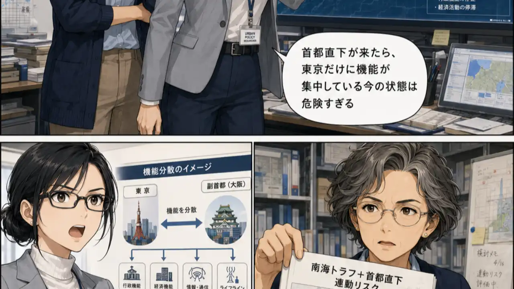

SNS反応まっぷ
テーマ一覧
ランキング
データについて
使い方
よくある質問
はじめての方
テーマを見る
投票参加型 × AI分類
その話題、
SNSでは実は
どっちが多い？
ニュースやSNSで意見が割れる社会のテーマを、投票とAI分類でひと目で見える形に。
テーマを見る
›
賛成寄りの意見
反対寄りの意見
条件付きの意見
中立・保留
分析済み投稿
2,367
7/12更新 +1,069件追加
公開中のテーマ
8
6テーマで投票受付中
次回データ更新
7/19
あと5日
最終更新:
2026年7月12日
（全8テーマで計
+1,069件
のサンプルを追加・分類しました）
次回更新: 7月19日（
あと5日
）
🔥
今週の注目テーマ
もっと見る ›

投票受付中
政治・統治機構
副首都法案・副首都構想
副首都、本当に必要？場所は大阪でいい？衆院通過した副首都法案をめぐる6つの論点を整理。
反対・慎重
どちらでもない
賛成・推進
現在の意見の割合
25%
29%
38%
7%
SNS分析対象
255件
論点アリーナ
6論点
詳細を見る ›
⚙️
意見が最も割れているテーマ
SNS分類分布から算出
1
憲法改正論議
政治・法律
25%
41%
19%
15%
割れ度
82
/100
2
自転車の青切符導入の是非
交通・安全
29%
26%
35%
10%
割れ度
78
/100
3
生成AIと著作権問題
テクノロジー
38%
26%
8%
28%
割れ度
76
/100
4
高齢者の運転免許返納義務化
交通・福祉
37%
10%
18%
35%
割れ度
72
/100
🌐
話題のテーマ
すべて
政治・法律
生活・教育
NEW
教育・子ども
部活動の地域移行の是非
62%
14%
10%
14%
投稿 180件 | 2Dスタンスマップ
+98件 7/12
テクノロジー
生成AIと著作権問題
38%
26%
8%
28%
投稿 904件 | 2Dスタンスマップ
+369件 7/12
政治・法律
憲法改正論議
25%
41%
19%
15%
投稿 422件 | 2Dスタンスマップ
+212件 7/12
投票受付中
交通・安全
自転車の青切符導入の是非
29%
26%
35%
10%
投稿 177件 | 2Dスタンスマップ
+65件 7/12
交通・福祉
高齢者の運転免許返納義務化
37%
10%
18%
35%
投稿 183件 | 2Dスタンスマップ
+97件 7/12
投票受付中
教育・子ども
学校でのあだ名禁止の是非
41%
31%
15%
13%
投稿 344件 | 2Dスタンスマップ
+31件 7/12
政治・ネット選挙
高市文春・中傷動画問題
36%
40%
10%
14%
投稿 324件 | スタンスマップ
+136件 7/12
NEW
政治・統治機構
副首都法案・副首都構想
25%
29%
38%
7%
投稿 255件 | 論点アリーナ（6論点）
教育・基地問題
辺野古高校生死亡事故
45%
28%
16%
11%
投稿 403件 | スタンスマップ
+61件 7/12